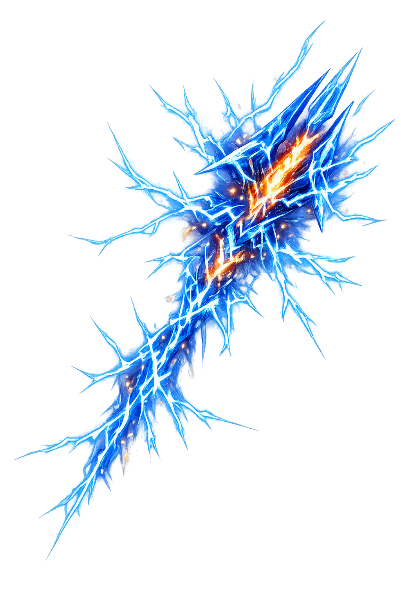

Stories of Keraunós
The keraunós is not merely a weapon but the emblem of Zeus's rule — forged at the beginning of his reign, decisive in his two great wars, and terrible against mortals who reach too high or are loved too much.
When Zeus came of age to challenge Kronos, Gaiä named his allies: the Cyclopes, one-eyed smiths imprisoned in the depths. Zeus freed them, and they repaid him with the three weapons of heaven — thunder, lightning, and 'the glowing thunderbolt' (Hesiod, Theogony 501–506); the same passage remembers their earlier craft, arms for the gods at the beginning (Theogony 139–141). The bolt is thus born at the exact moment Zeus's power needs a form: before it he is a younger god with grievances, after it he is the storm. Homer never forgets the connection, and calls the bolt simply the weapon when Zeus arms himself at the brink of the Trojan War (Iliad 8.75). The myth explains why no one else may hold it: the keraunós is the signature of sovereignty, forged once and never re-made.
The war between the Olympians and the Titans lasted ten years with no advantage on either side, until Zeus brought up the Cyclopes' gifts. Then heaven changed hands: 'from Olympus he hurled his bolts in succession, and the earth groaned, burning, and the great forests crackled on every side; the whole earth boiled, and the streams of Ocean, and the unharvested sea' (Hesiod, Theogony 687–713). The Titans were struck down, bound, and cast into misty Tartarus behind gates of bronze. The keraunós here is not one throw but a barrage — the first use of concentrated, overwhelming force in Greek myth, and the poem's theological argument that raw elder power yields to armed, organized thunder. Every later bolt-throw reenacts this one: order established by a weapon that cannot be answered, and therefore never has to be.
The last challenger was Typhon, a being with a hundred serpent heads, eyes of fire, and voices that were by turns gods', bulls', and lions'. The whole cosmos recoiled; Zeus met him with the full armory — thunder and lightning first, then 'the thunderbolt, hard and heavy, that casts the blazing light' (Hesiod, Theogony 820–868). The bolt burned the hundred heads, struck Typhon down, and sent him beneath the land, where he still feeds the eruptions of Etna. The combat pairs like with like — storm against storm — and the keraunós wins not by being bigger but by being directed: Typhon is weather without a wielder, the bolt weather that obeys. Greek theology is compressed into the image. Power becomes legitimate only when it serves an ordered hand, and the hand is Zeus's.
Against mortals the bolt keeps two ledgers. Semele, beloved of Zeus and pregnant with Dionysus, was tricked by jealous Hera into asking to see her lover in his full godhead; the promised thunder and lightning destroyed her — though Zeus rescued the unborn child, sewn into his thigh until term (Apollodorus, Library 3.4.3; cf. Homer, Iliad 14.323–325). Salmoneus kept the opposite account: he dragged bronze bridges behind his chariot for thunder and hurled torches for lightning, demanding sacrifices as though he were Zeus; the true keraunós answered and burned him and his city (Apollodorus 1.9.7; Virgil, Aeneid 6.585–594). One mortal died for loving the storm too much, the other for impersonating it. Between them the bolt defines its narrow path: humanity must neither seize divine fire nor counterfeit it — and the keraunós, which never misses, is the eternal enforcer of that narrowness.
Thunderbolt
Keraunós is the thunderbolt of Zeus — the weapon forged by the Cyclopes and never once missing its mark. It is at once an instrument of war, the badge of sovereignty, and an omen read in the sky; Homer makes all of heaven tremble when Zeus rises with it.
Forged by the Cyclopes with thunder and lightning as Zeus's arms (Hesiod, Theogony 501–506).
With it Zeus broke the Titans and blasted Typhon — cosmic order enforced by a single weapon (Theogony 687–721, 853–868).
It killed Semele, beloved of Zeus, and the blasphemer Salmoneus — love and hubris struck by the same fire (Apollodorus 3.4.3, 1.9.7).
Lightning read as Zeus's omen before assembly and battle — a flash on the right meant assent (Iliad 2.353–354).
From the original script to the living URL
κεραυνός
The name in its original Greek form. Keraunós (κεραυνός) is attested in the source tradition — “Thunderbolt (the weapon of Zeus)”. Its diphthongs and acute accents carry the full phonetic and orthographic weight of the source tradition.
keraunos
Reduced to plain keraunos, the name loses everything that made it specific: diphthongs and acute accents. What remains is an ASCII string that machines can parse but that no longer speaks with its original voice.
Keraunós
The Unicode restoration recovers what ASCII flattened. Keraunós restores diphthongs and acute accents, returning the name to its original written dignity. The domain encodes to Punycode, but the browser displays the truth.
Keraunós.com → xn--kerauns-q0a.com
The non-ASCII characters in Keraunós are encoded while the ASCII remains visible. To the DNS, it is Punycode. To humanity, it is Keraunós.
Owned, ideal, and ASCII forms of Keraunós
Keraunós
Restores κεραυνός. The live temple domain — keraunós.com.
keraunos
Flattens κεραυνός. The plain ASCII fallback — what DNS and legacy systems see.
How Keraunós was spoken
How Keraunós is preserved in writing
A bespoke provenance study for Keraunós is being prepared by the PUNICODEX scholarly team.
Contribute scholarly provenance →Every pantheon has a weapon; only the Greeks made the weapon a word of its own. Keraunós names not thunder but the bolt — the compact, thrown thing, power that has decided to land. It cannot be parried, dodged, or argued with: Semele's tragedy and Salmoneus's comedy are the two human postures before it, love and imitation, both fatal. Perhaps that is why Zeus rarely aims it at equals. The bolt is reserved for the moments when the cosmos itself must speak, and the gods' usual instruments — cunning, oath, marriage — have gone quiet. A temple of the thunderbolt is therefore a temple of ultimacy: the address where heaven keeps its last word, and where mortals learn that the last word is not a sentence but a light.
Enter Extended Lore